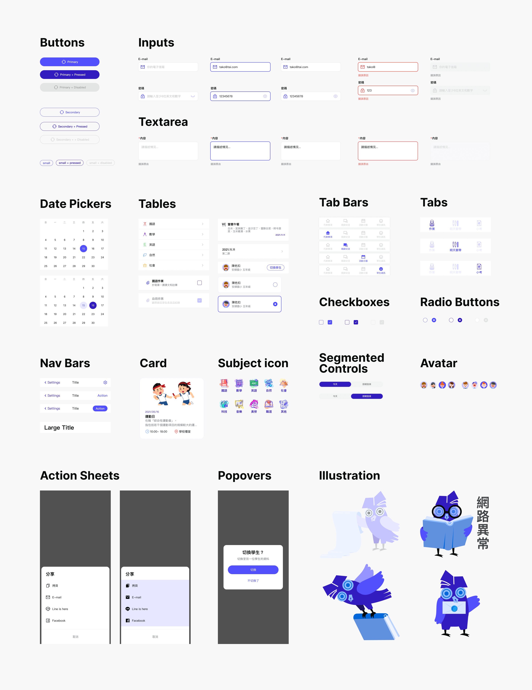
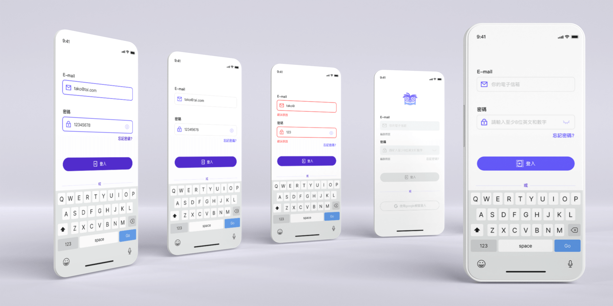
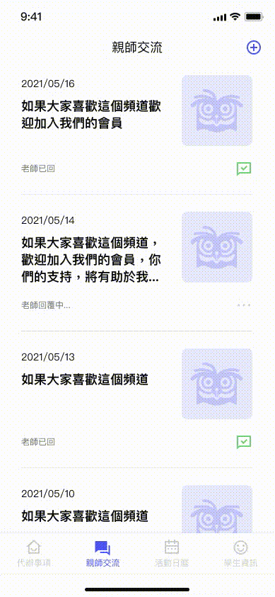
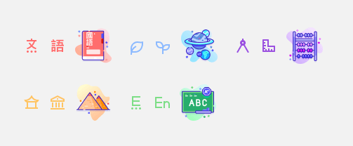

e-Contact Book
A new way of communication between parents and teachers
Parent-Teacher Contact Book
Introduction
The contact book is a kind of parent-teacher traditional communication medium between teachers, parents, and students in Taiwanese elementary schools and junior high schools.
{kind=link}
{kind=link}
{kind=link}
Problem & Solution
The purpose is that allow teachers to establish communication relationships with
students' parents who can know the publicity matters of the school. Take
examples, the child's class situations, and quiz records.
The content of the contact book mainly has three items-
1. Student hand-written records (to let parents
know the status of the school
today) such as the scope of assignments and quizzes and stationery have to bring
tomorrow.
2. The parent signs and seals to let the teacher know
the performance of the
child that had done (some parents even leave questions, and the
teacher will
reply to the message after receiving the contact book the next day).
3. School calendar schedule
Due to the outbreak of covid-19, it is necessary to avoid contact with
objects and online teaching. The electronic contact book has become a popular
choice for teachers and parents.
The target audience of this app is parents.
I designed to use "to-do lists" to solve the problem of
the first item (student hand-written records), not only let the parents know
the child's homework but the child can know what he has not prepared yet
through the "unchecked" method at a glance.
This app not only solves the problems of the traditional contact book, but also has an answer book for the online quiz, which allows parents and children to review wrong questions and improve students' learning ability.
user insight
A student said "Sometimes I missed the copy of what the teacher wrote on the blackboard. For example, yesterday I forgot bring a scissor in art and craft class."
Parents said "Because I am not good at using computers, all courses are changed to online teaching nowadays, I don’t know how to understand the child’s learning situation."
Wireframe

Design Guide
▾ iOS system
{kind=link}
Icon
I chose an owl as the app's mascot because owls are associated with wisdom and learning. Plus, pens and books are necessary for "sign" the contact book; therefore, I combine these images to a new icon.
{kind=link}
Forget Password/ Log In
{kind=link}
{kind=link}
{kind=link}
▾ focused, filled, error, disabled and default status of login forms
{kind=link}
To do list
I segmentate a to-do item into three different projects- "doing" today's
homework," "taking" necessities tomorrow, and "studying" the scope of the quiz
tomorrow.
For user-friendly, when users clicked the tick, I designed an animation of the
smiling face to celebrate the completion of the task. On the contrary, when the
user thought they were finished but later found out that task was not completed,
and wanted to cancel the tick, the surprised faces show to indicate their
mistakes.
{kind=link}
{kind=link}
{kind=link}
Feedback
In order to protect the teacher from being disturbed by replying to the parents’ messages after get off work, the feedback function is only “one-way” that usually after the parent asks a question, the teacher ends the conversation after replying to the question.
{kind=link}
{kind=link}
{kind=link}
Calendar
{kind=link}
{kind=link}
Student Info
In addition, I use a variety of different colors to make the subject logo to match the subject icon, so that users easily identify it, even in different places, for example, Nature represents light blue in this case.
{kind=link}
{kind=link}
{kind=link}
{kind=link}
The electronic contact book case, including user experience, user interface, user flow, and logo are all designed and realized by me from scratch. I chose blue-violet as the main visual color which is popular in the technology industry this year. Because the blue-violet is very eye-catching, all of key reminders are this color in the project. When items pressed, it will become a darker bluish-violet.
UI
UX